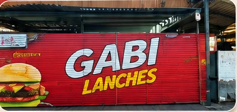

Os melhores comentários merecem destaque. Aqui entram avaliações reais, após aprovação do estabelecimento.
Avaliações verificadasLANCHES • PORÇÕES • BEBIDAS
O seu lanche favorito
em Cascavel!
Lanches bem preparados, ingredientes de qualidade e aquele sabor que já é tradição na cidade.
Delivery RápidoReceba no conforto de casa
Qualidade GarantidaIngredientes selecionados
Pagamento FacilitadoConsulte as formas disponíveis
Diversas OpçõesLanches, porções e bebidas

SOBRE NÓS
Tradição e Sabor
na sua Rotina
Somos uma lanchonete local de Cascavel – PR, com o compromisso de oferecer lanches bem preparados e atendimento prático para você.
AVALIAÇÕES